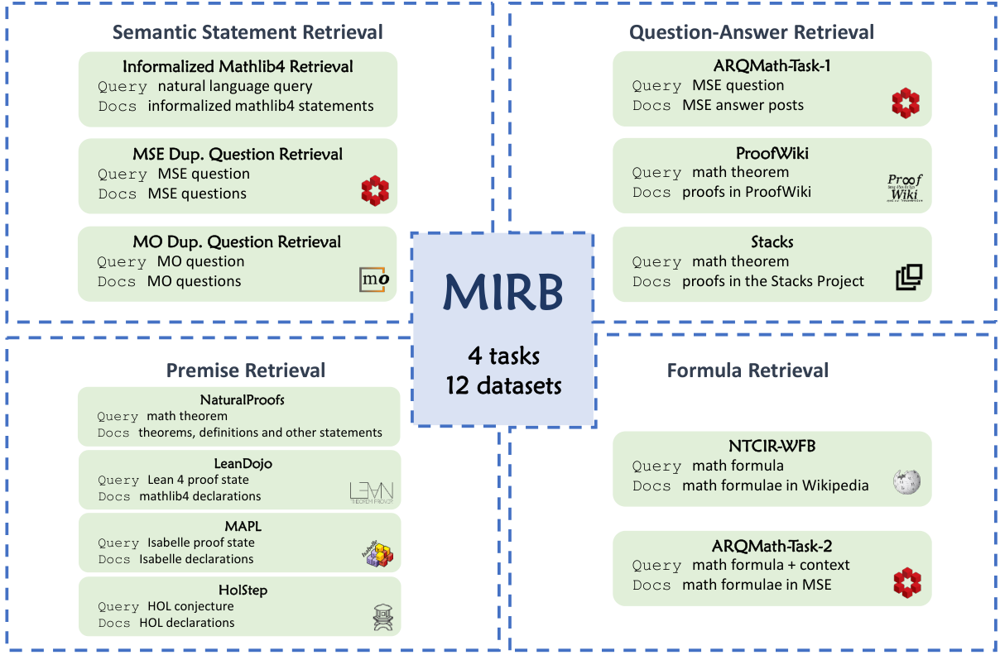

Benchmark includes Lean-based retrieval datasets: informalized Mathlib4 statement search and LeanDojo premise retrieval from Lean 4 proof states.
Abstract
Mathematical Information Retrieval (MIR) is the task of retrieving information from mathematical documents and plays a key role in various applications, including theorem search in mathematical libraries, answer retrieval on math forums, and premise selection in automated theorem proving. However, a unified benchmark for evaluating these diverse retrieval tasks has been lacking. In this paper, we introduce MIRB (Mathematical Information Retrieval Benchmark) to assess the MIR capabilities of retrieval models. MIRB includes four tasks: semantic statement retrieval, question-answer retrieval, premise retrieval, and formula retrieval, spanning a total of 12 datasets. We evaluate 13 retrieval models on this benchmark and analyze the challenges inherent to MIR. We hope that MIRB provides a comprehensive framework for evaluating MIR systems and helps advance the development of more effective retrieval models tailored to the mathematical domain.
Problem
Mathematical information retrieval underlies theorem search in libraries such as Mathlib4, answer retrieval on math forums, and premise selection for theorem proving. No unified benchmark existed for evaluating these varied tasks together.
Approach
MIRB collects 12 datasets across four tasks: semantic statement retrieval, question-answer retrieval, premise retrieval, and formula retrieval. Lean-specific components are Informalized Mathlib4 Retrieval and the LeanDojo premise retrieval set, where queries are Lean 4 proof states and the corpus is Mathlib4 declarations. Isabelle (MAPL) and HOL Light (HolStep) premise sets are also included. Thirteen sparse, open-source dense, and proprietary embedding models are evaluated with nDCG@10.

Figure 1: Overview of tasks and datasets in MIRB.
Results
Models perform moderately on semantic retrieval tasks but poorly on reasoning-based tasks. Formal premise retrieval is hardest; LeanDojo scores fall below 7 nDCG@10 for the smaller models shown. Adding cross-encoder rerankers does not improve performance.